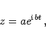

Inhalt Index DeskTop Bronstein

 Funktionentheorie Algebraische und elementare transzendente Funktionen
Funktionentheorie Algebraische und elementare transzendente Funktionen


Eine komplexe Funktion von einer reellen Veränderlichen t kann auch in Parameterform dargestellt werden:
| (14.91) |
Bei Änderungen von t durchlaufen die Punkte z eine Kurve .
Die Gleichungen für Gerade, Kreis, Hyperbel, Ellipse und logarithmische Spirale lauten:
| (14.94a) |
oder
| (14.94b) |
wobei c und konjugiert komplexe Zahlen sind:
| (14.94c) |
| (14.95a) |
oder
| (14.95b) |
mit
| (14.95c) |
d.h., c und d sind beliebige reelle Zahlen.
| (14.96) |
Mit c und d sind beliebige komplexe Zahlen bezeichnet, die die Länge der Ellipsenachsen und ihre Drehung bestimmen.
|  | (14.97) |
wobei a und b beliebige komplexe Zahlen sind.